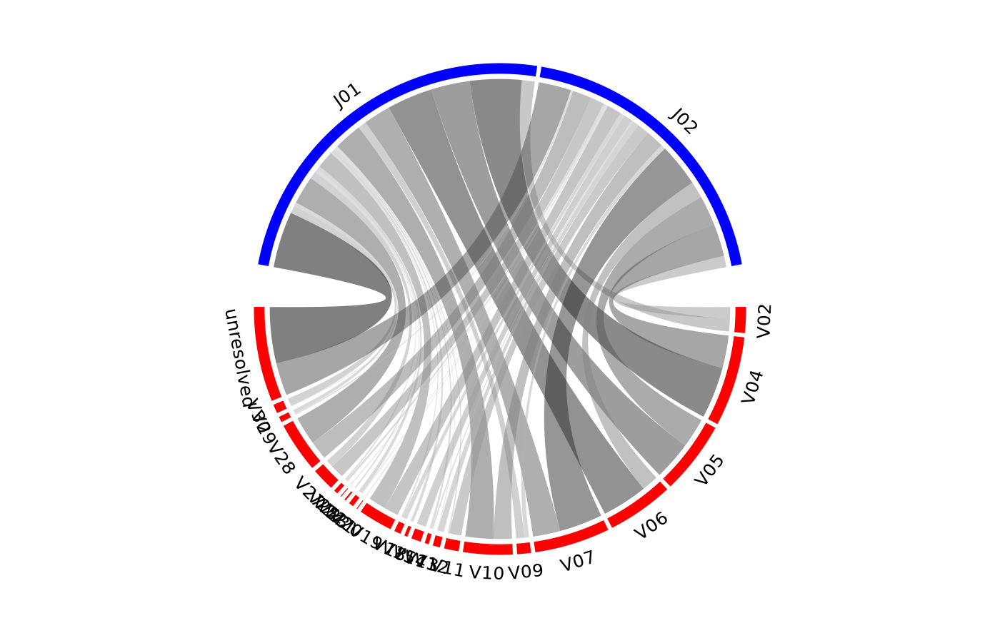

Creates a chord diagram showing VJ or DJ gene associations from one or more samples.
Usage
chordDiagramVDJ(study_table, association = "VJ", colors = c("red", "blue"))Arguments
- study_table
A tibble consisting of frequencies of antigen receptor sequences. "v_family", "j_family", and if applicable, "d_family" are required columns. Using output from the LymphoSeq2 function
topSeqs()is recommended.- association
A character vector of gene families to associate. Options include
"VJ"or"DJ".- colors
A character vector of 2 colors corresponding to the V/D and J gene colors respectively.
Details
The size of the ribbons connecting VJ or DJ genes correspond to the number of samples or number of sequences that make up that recombination event. The thicker the ribbon, the higher the frequency of the recombination.
Examples
file_path <- system.file("extdata", "TCRB_sequencing",
package = "LymphoSeq2")
study_table <- LymphoSeq2::readImmunoSeq(file_path, threads = 1)
#> Dataset Analysis:
#> Files: 10, Total: 0.00 GB, Largest: 0.0 MB
#> Available memory: 14.2 GB
study_table <- LymphoSeq2::topSeqs(study_table, top = 100)
nucleotide_table <- LymphoSeq2::productiveSeq(study_table,
aggregate = "junction")
top_seqs <- LymphoSeq2::topSeqs(nucleotide_table, top = 100)
chordDiagramVDJ(top_seqs,
association = "VJ",
colors = c("red", "blue")
)
